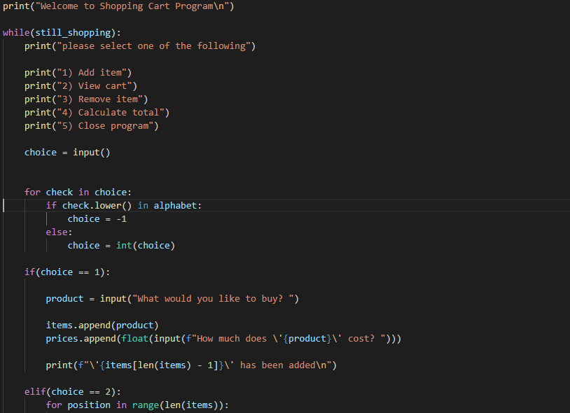

Programming
Programming is a lot of fun, but before we get into programming, let's answer a few questions.
What is programming Programming
Programming is giving commands to the computer to have it accomplish some objective; this can be anything from simply saying hello to doing complex games or even science.
the puropose of programming to to get the computer to do what we want, to go through what is called code that we, the progammers, put in. If the programmer didn't make any mistakes the computer will do exactly what the programmer wanted.
Why is programming so hard
programming is hard because, as I like to say, the language of computers is pure logic. The computer will do exactly what you tell it to do.
This makes programming difficult because often times we as humans like to skip steps, for example, if you wanted to tell someone to draw a smiley face, telling them to draw a circle, 2 eyes and a mouth is enough. with a computer you have to tell them every detail on the way, how big is the circle where do I start the first eye, where do I start the secound eye, etc.
Where do I start
here at this wonderful website we can teach you the basics of programming, just click on the start here button if you are a beginner to start learning to program today.